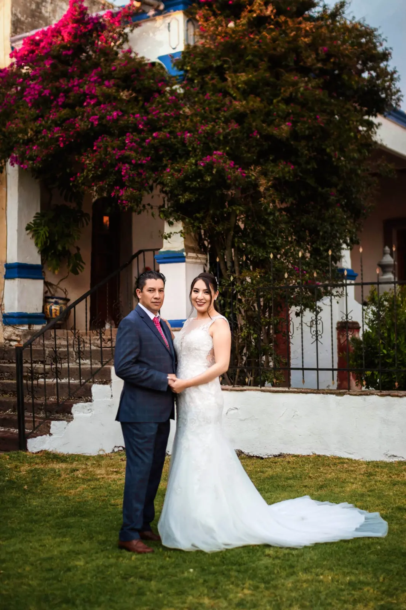
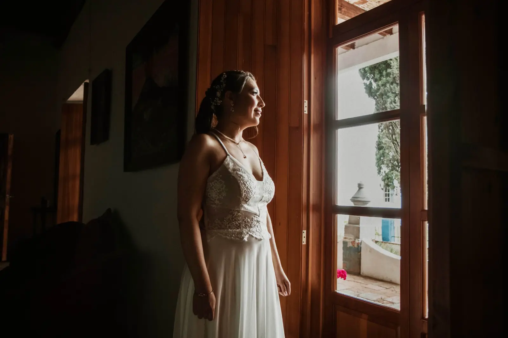
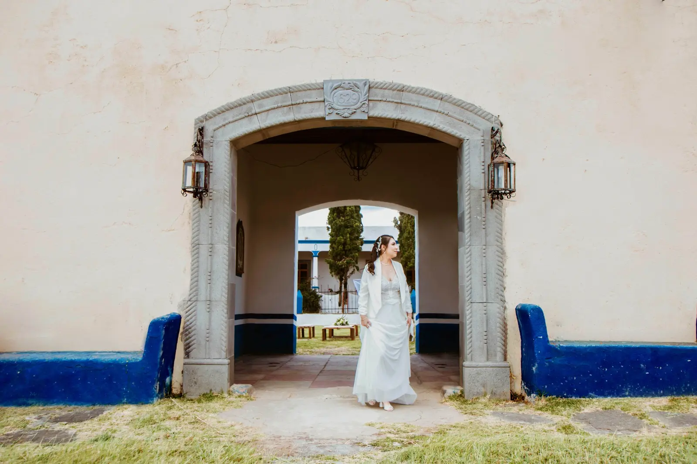
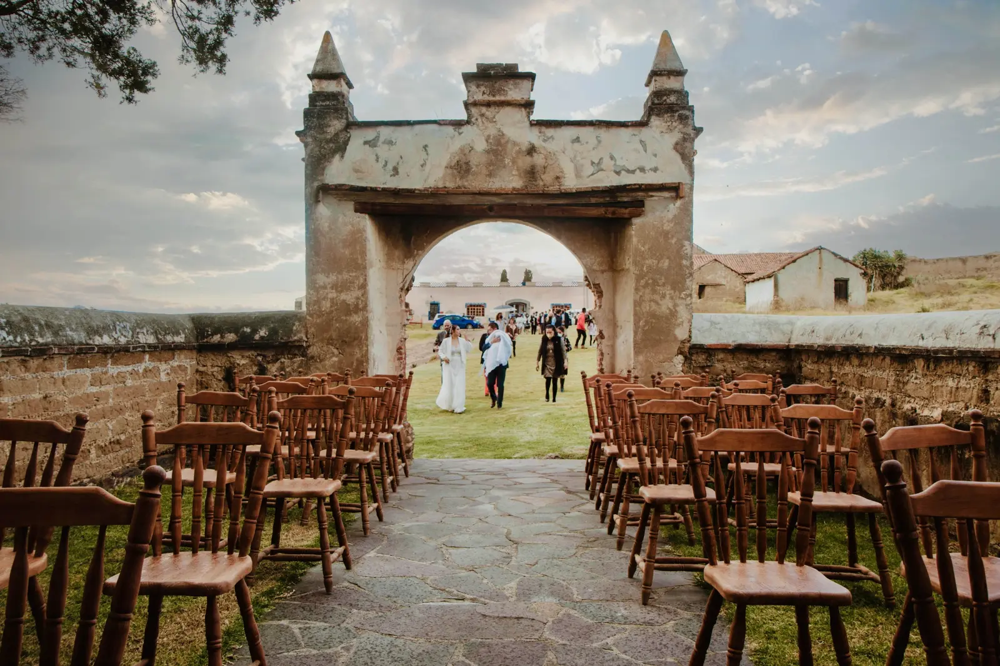
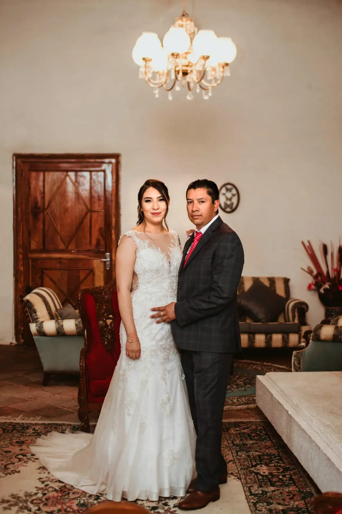
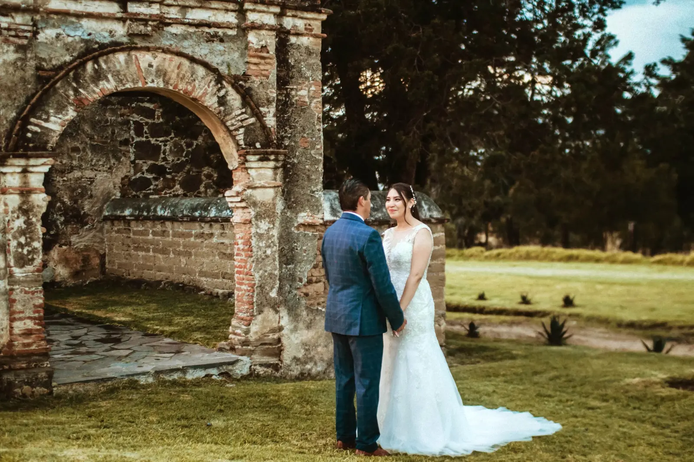
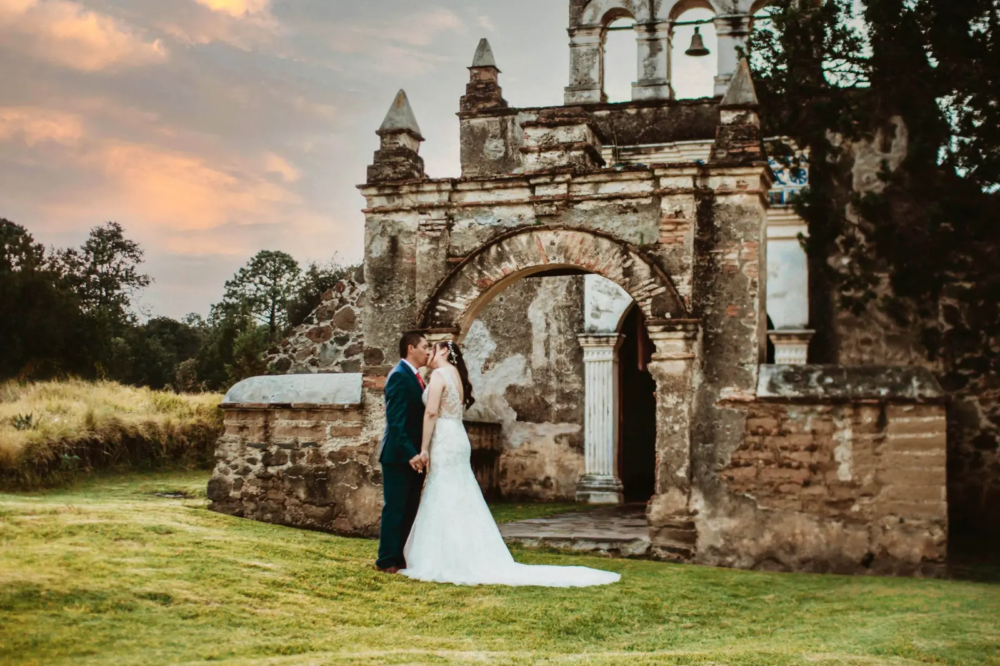
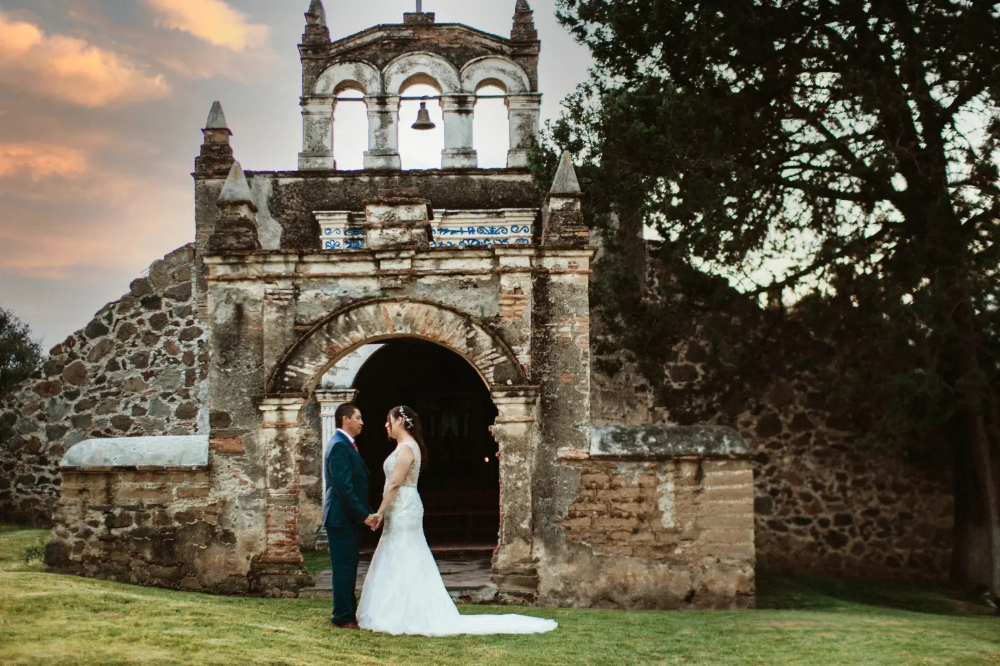
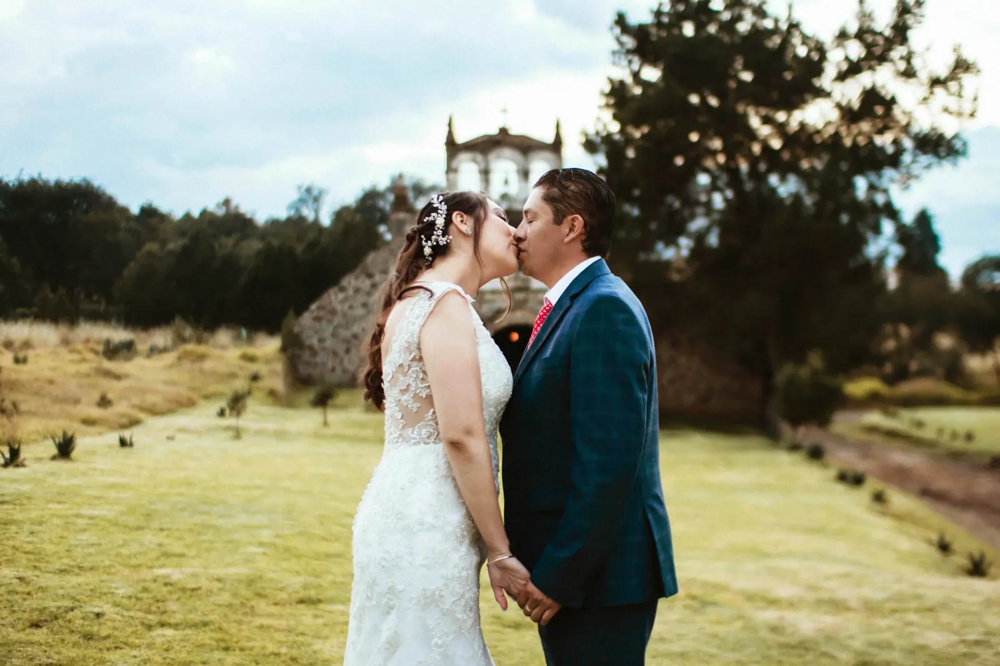
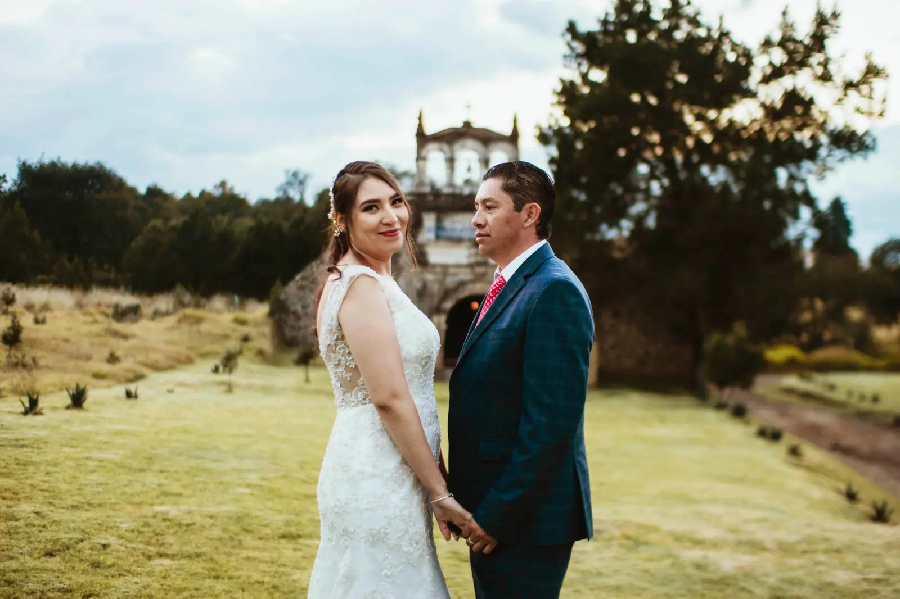

Una boda tradicional en Tlaxcala
Andrea & Guillermo
Hacienda Tepetzala · Tlaxcala
Una celebración familiar para confirmar una historia que ya estaba construida.
Andrea y Guillermo ya compartían su vida cuando decidieron dar mayor formalidad a los lazos de amor y afecto que habían creado juntos. En noviembre de 2023 reunieron a sus seres queridos en Hacienda Tepetzala para celebrar una boda profundamente familiar.
La preparación, la ceremonia civil, la ceremonia religiosa y la recepción ocurrieron en el mismo lugar. El momento más emotivo llegó cuando Andrea entró a la antigua capilla de la hacienda y comenzó una ceremonia llena de significado para ambos.

Una hacienda, una capilla y una celebración íntima.
Diez fotografías que resumen la preparación, la ceremonia y el carácter tradicional de su boda en Tlaxcala.









Hacienda Tepetzala, Tlaxcala
Todo el día reunido en un lugar con historia.
Celebrar cada etapa en la misma hacienda permitió que el día avanzara con calma. Sus espacios interiores acompañaron la preparación; los jardines y las ruinas enmarcaron la sesión, y la pequeña capilla se convirtió en el centro emocional de la celebración.
La boda mantuvo un carácter familiar y tradicional del estado de Tlaxcala. Andrea y Guillermo se mostraron cercanos, generosos y dispuestos a disfrutar cada momento con las personas que forman parte de su historia.
Fotógrafo de bodas en Tlaxcala
Historias reales en haciendas de Tlaxcala.
Documentamos bodas con una mirada editorial y honesta, cuidando las emociones, la arquitectura y los pequeños momentos que hacen distinta cada celebración.
- ParejaAndrea y Guillermo
- FechaNoviembre de 2023
- PreparaciónHacienda Tepetzala
- CeremoniasReligiosa y civil
- RecepciónHacienda Tepetzala
- CoberturaFotografía